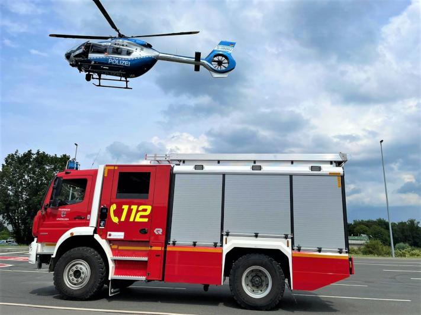
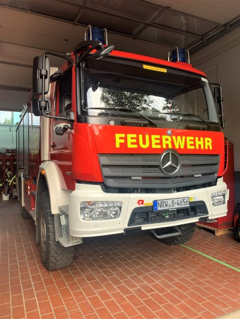

Unsere Wache
Wird ein Alarm ausgelöst, verlassen die freiwilligen Feuerwehrleute ihren Arbeitsplatz und begeben sich zur Feuerwache. Außerhalb der Arbeitszeit fahren die Freiwilligen von zu Hause (oder von ihrer Freizeitaktivität) zur Feuerwache. Dort hängt ihre Einsatzkleidung, dort ist die Ausrüstung gelagert und dort stehen die Einsatzfahrzeuge.
Bildergalerie

